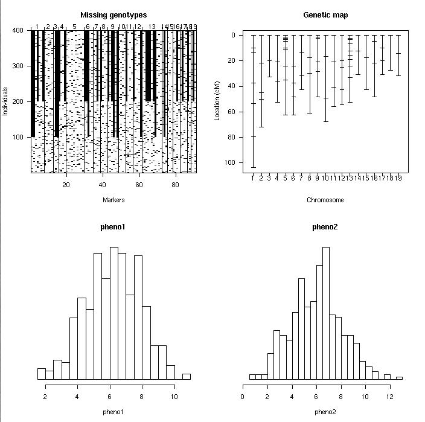

[ Home | Download | FAQ | News | Bugs | Sample data | Tutorials | Book | Manual | Citation ]
Summary plot for an experimental cross. The top left panel displays the pattern of missing genotype data; the top right shows the genetic map. The lower panels are histograms of two phenotypes.

[ Home | Download | FAQ | News | Bugs | Sample data | Tutorials | Book | Manual | Citation ]